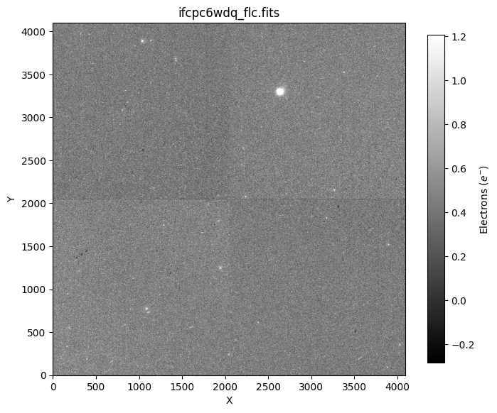
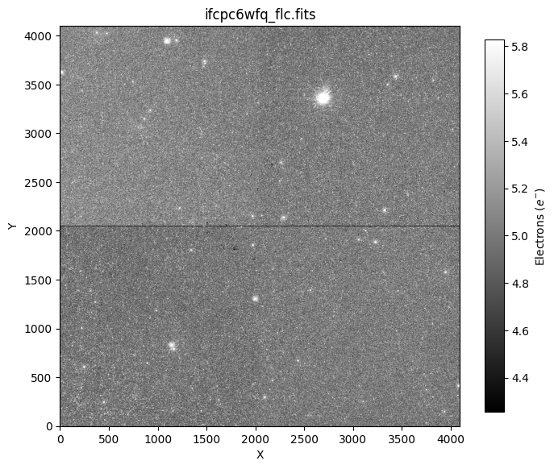
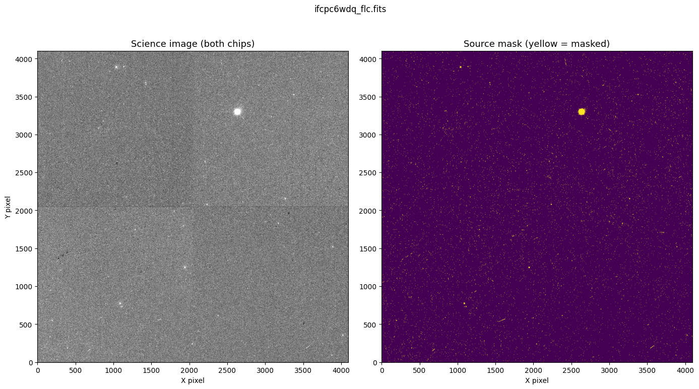
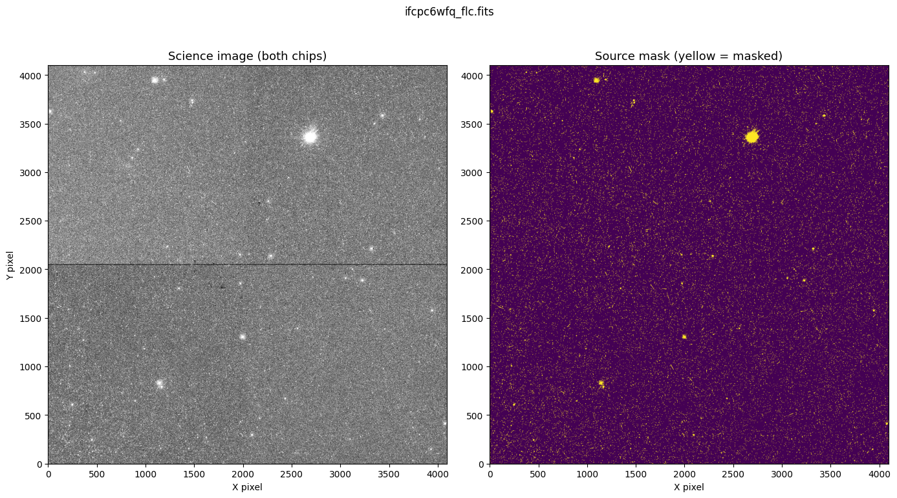
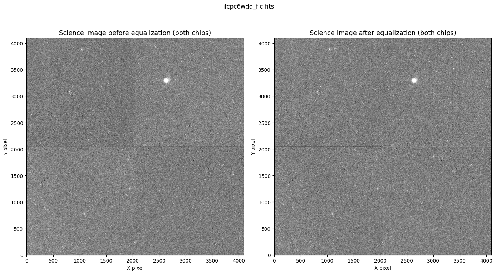
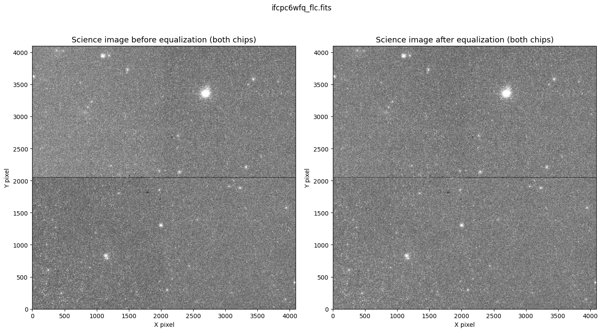
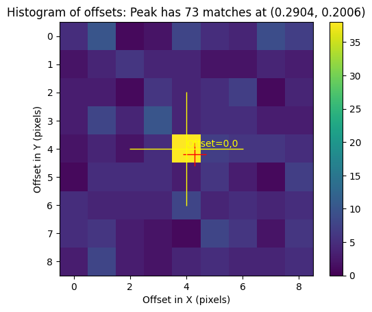
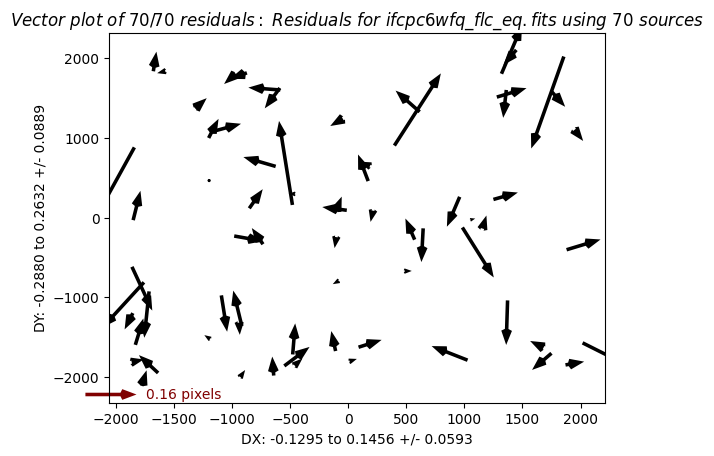
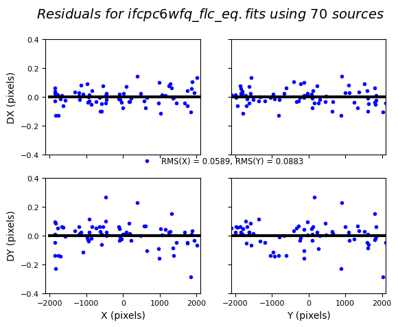
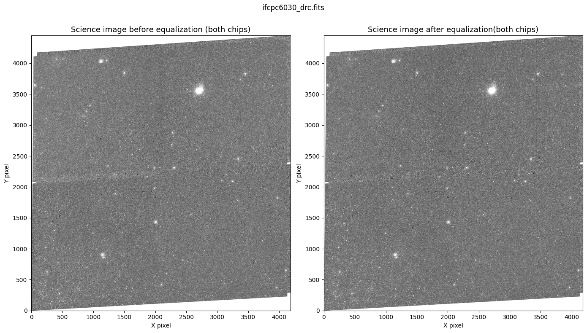

WFC3/UVIS: Equalizing Amplifier Offsets in FLC/FLT Images#
Learning Goals#
In this tutorial you will:
Download data from MAST
Build a segmentation map
Measure the background in each quadrant
Apply flat-field corrections and equalize amp bias levels
Table of Contents#
1. Introduction #
In this tutorial, you will be guided through how to determine the amplifier-dependent bias offsets in a Wide Field Camera 3 (WFC3) UVIS channel image and equalize the bias levels in each amplifier (amp) to the average across the image.
The amp-offset correction workflow in this notebook follows the method from Sunnquist (2019) and uses much of the same code. An overview of the steps we will take to achieve this is as follows:
Build a source segmentation map to mask stars and galaxies before measuring sky backgrounds
Measure the background level in each amp quadrant (avoiding sources) and the mean over all amps
Compute per-amp offsets relative to the overall mean background
Multiply these offsets by the flat field to account for sensitivity variations.
Subtract the resulting amp-by-amp corrections from the original
FLC/FLTdata.
If necessary, users should then re-drizzle their data using the corrected images to create new DRZ/DRC files after completing the above steps.
The WFC3/UVIS detector has four amplifiers (A, B, C, D), each covering one quadrant of the 4Kx4K pixel field. Even after the standard calwf3 pipeline reduction, small offsets to the bias level can persist between quadrants. These offsets are relatively constant across each quadrant, and sometimes show up as visible to the eye, with some amps brighter than others.
WFC3/UVIS Amplifier Layout#
The UVIS detector spans two CCDs (chips), each with two amps. The science data live in FITS extensions 1 (chip 2, lower) and 4 (chip 1, upper).
┌──────────────────────┐
│ Amp A │ Amp B │ ← Extension 4, UVIS1
├──────────────────────┤
│ Amp C │ Amp D │ ← Extension 1, UVIS2
└──────────────────────┘
Within each extension, the left half corresponds to one amp and the right half to the other.
2. Setup #
Environment#
This notebook requires a working STScI Conda environment, stenv. If you do not have one, follow the stenv installation guide before proceeding.
This notebook requires users to install the packages listed in the requirements.txt file located in the notebook’s sub-folder on the GitHub repository. Most of these packages should already exist in your stenv environment, but if you happen to be missing any required packages, they can be installed from the requirements.txt file with pip install.
3. Imports #
For this notebook we import:
| Package | Purpose |
|---|---|
glob |
File handling |
matplotlib.pyplot |
Displaying images and visualizing offsets |
numpy |
Handling arrays |
os |
System commands |
shutil |
File and directory clean up |
astropy.io.fits |
Reading and modifying FITS files |
astropy.convolution |
Tools to smooth the background of images |
astropy.stats |
Tools to smooth the background of images |
astroquery.mast.Observations |
Downloading FLC and DRC data from MAST |
photutils.segmentation |
Creating source masks |
drizzlepac |
Aligning and re-combining images |
import glob
import os
import shutil
import numpy as np
import matplotlib.pyplot as plt
%matplotlib inline
from astropy.io import fits
from astropy.convolution import convolve, Gaussian2DKernel
from astropy.stats import gaussian_fwhm_to_sigma
from astroquery.mast import Observations
from photutils.segmentation import detect_sources, detect_threshold
from drizzlepac import tweakreg, astrodrizzle
from drizzlepac.processInput import getMdriztabPars
4. Inputs #
Downloading an Example Image#
For the purposes of this tutorial, we will download a set of WFC3/UVIS images with clear amp-dependent offsets and work through the steps to correct the offsets. Alternatively, you could download your own data to run through this pipeline! We recommend working through the example data first.
We will use Astroquery to retrieve files. We query for data from the Mikulski Archive for Space Telescopes (MAST) as follows:
# Define the dataset you want. In this case, we are using the obsID for the set of two example exposures
obsID = 'ifcpc6030'
# Query observations by obs_id
obs_table = Observations.query_criteria(obs_id=obsID)
# Get list of data products
data_products = Observations.get_product_list(obs_table)
data_products
| obsID | obs_collection | dataproduct_type | obs_id | description | type | dataURI | productType | productGroupDescription | productSubGroupDescription | productDocumentationURL | project | prvversion | proposal_id | productFilename | size | parent_obsid | dataRights | calib_level | filters |
|---|---|---|---|---|---|---|---|---|---|---|---|---|---|---|---|---|---|---|---|
| str9 | str3 | str5 | str37 | str64 | str1 | str69 | str9 | str28 | str11 | str1 | str7 | str19 | str5 | str52 | int64 | str9 | str6 | int64 | str9 |
| 381172864 | HST | image | ifcpc6030 | DADS JIF file | D | mast:HST/product/ifcpc6030_jif.fits | AUXILIARY | -- | JIF | -- | CALWF3 | -- | 17833 | ifcpc6030_jif.fits | 60480 | 381172864 | PUBLIC | 1 | F336W |
| 381172864 | HST | image | ifcpc6030 | DADS JIT file | D | mast:HST/product/ifcpc6030_jit.fits | AUXILIARY | -- | JIT | -- | CALWF3 | -- | 17833 | ifcpc6030_jit.fits | 57600 | 381172864 | PUBLIC | 1 | F336W |
| 381172864 | HST | image | ifcpc6030 | DADS SPT file - Engineering telemetry ACS/WFC3/NICMOS/COS/STIS | D | mast:HST/product/ifcpc6030_spt.fits | AUXILIARY | -- | SPT | -- | CALWF3 | -- | 17833 | ifcpc6030_spt.fits | 178560 | 381172864 | PUBLIC | 1 | F336W |
| 381172864 | HST | image | ifcpc6030 | Pipeline processing logs | D | mast:HST/product/ifcpc6030_trl.fits | AUXILIARY | -- | TRL | -- | CALWF3 | -- | 17833 | ifcpc6030_trl.fits | 478080 | 381172864 | PUBLIC | 1 | F336W |
| 381172864 | HST | image | ifcpc6030 | DADS ASN file - Association ACS/WFC3/STIS | D | mast:HST/product/ifcpc6030_asn.fits | AUXILIARY | Minimum Recommended Products | ASN | -- | CALWF3 | 3.7.3 (Jan-07-2026) | 17833 | ifcpc6030_asn.fits | 11520 | 381172864 | PUBLIC | 3 | F336W |
| 381172864 | HST | image | ifcpc6030 | DADS LOG file | D | mast:HST/product/ifcpc6030_log.txt | INFO | -- | LOG | -- | CALWF3 | -- | 17833 | ifcpc6030_log.txt | 146130 | 381172864 | PUBLIC | 1 | F336W |
| 381172864 | HST | image | ifcpc6030 | Preview-Full | D | mast:HST/product/ifcpc6030_drc.jpg | PREVIEW | -- | -- | -- | CALWF3 | 3.7.3 (Jan-07-2026) | 17833 | ifcpc6030_drc.jpg | 3733405 | 381172864 | PUBLIC | 3 | F336W |
| 381172864 | HST | image | ifcpc6030 | Preview-Full | D | mast:HST/product/ifcpc6030_drz.jpg | PREVIEW | -- | -- | -- | CALWF3 | 3.7.3 (Jan-07-2026) | 17833 | ifcpc6030_drz.jpg | 4074142 | 381172864 | PUBLIC | 3 | F336W |
| 381172864 | HST | image | ifcpc6030 | DADS DRC file - CTE-corrected calibrated combined image ACS/WFC3 | D | mast:HST/product/ifcpc6030_drc.fits | SCIENCE | Minimum Recommended Products | DRC | -- | CALWF3 | 3.7.3 (Jan-07-2026) | 17833 | ifcpc6030_drc.fits | 223217280 | 381172864 | PUBLIC | 3 | F336W |
| ... | ... | ... | ... | ... | ... | ... | ... | ... | ... | ... | ... | ... | ... | ... | ... | ... | ... | ... | ... |
| 381174603 | HST | image | hst_17833_c6_wfc3_uvis_f336w_ifcpc6 | HAP trailer file | D | mast:HST/product/hst_17833_c6_wfc3_uvis_f336w_ifcpc6_trl.txt | AUXILIARY | -- | TRL | -- | HAP-SVM | DrizzlePac 3.10.0 | 17833 | hst_17833_c6_wfc3_uvis_f336w_ifcpc6_trl.txt | 16937 | 381172864 | PUBLIC | 3 | F336W |
| 381174603 | HST | image | hst_17833_c6_wfc3_uvis_f336w_ifcpc6 | Preview-Full | D | mast:HST/product/hst_17833_c6_wfc3_uvis_f336w_ifcpc6_drc.jpg | PREVIEW | -- | -- | -- | HAP-SVM | DrizzlePac 3.10.0 | 17833 | hst_17833_c6_wfc3_uvis_f336w_ifcpc6_drc.jpg | 4229051 | 381172864 | PUBLIC | 3 | F336W |
| 381174603 | HST | image | hst_17833_c6_wfc3_uvis_f336w_ifcpc6 | HAP fits science image | D | mast:HST/product/hst_17833_c6_wfc3_uvis_f336w_ifcpc6_drc.fits | SCIENCE | -- | DRC | -- | HAP-SVM | DrizzlePac 3.10.0 | 17833 | hst_17833_c6_wfc3_uvis_f336w_ifcpc6_drc.fits | 443459520 | 381172864 | PUBLIC | 3 | F336W |
| 381174603 | HST | image | hst_17833_c6_wfc3_uvis_f336w_ifcpc6 | HAP source catalog | D | mast:HST/product/hst_17833_c6_wfc3_uvis_f336w_ifcpc6_point-cat.ecsv | SCIENCE | -- | POINT-CAT | -- | HAP-SVM | DrizzlePac 3.10.0 | 17833 | hst_17833_c6_wfc3_uvis_f336w_ifcpc6_point-cat.ecsv | 1171901 | 381172864 | PUBLIC | 3 | F336W |
| 381174603 | HST | image | hst_17833_c6_wfc3_uvis_f336w_ifcpc6 | HAP source catalog | D | mast:HST/product/hst_17833_c6_wfc3_uvis_f336w_ifcpc6_segment-cat.ecsv | SCIENCE | -- | SEGMENT-CAT | -- | HAP-SVM | DrizzlePac 3.10.0 | 17833 | hst_17833_c6_wfc3_uvis_f336w_ifcpc6_segment-cat.ecsv | 4281757 | 381172864 | PUBLIC | 3 | F336W |
| 381174609 | HST | image | hst_17833_c6_wfc3_uvis_total_ifcpc6 | HAP trailer file | D | mast:HST/product/hst_17833_c6_wfc3_uvis_total_ifcpc6_trl.txt | AUXILIARY | -- | TRL | -- | HAP-SVM | DrizzlePac 3.11.0 | 17833 | hst_17833_c6_wfc3_uvis_total_ifcpc6_trl.txt | 261468 | 381172864 | PUBLIC | 3 | detection |
| 381174609 | HST | image | hst_17833_c6_wfc3_uvis_total_ifcpc6 | Preview-Full | D | mast:HST/product/hst_17833_c6_wfc3_uvis_total_ifcpc6_drc.jpg | PREVIEW | -- | -- | -- | HAP-SVM | DrizzlePac 3.11.0 | 17833 | hst_17833_c6_wfc3_uvis_total_ifcpc6_drc.jpg | 5049606 | 381172864 | PUBLIC | 3 | detection |
| 381174609 | HST | image | hst_17833_c6_wfc3_uvis_total_ifcpc6 | HAP fits science image | D | mast:HST/product/hst_17833_c6_wfc3_uvis_total_ifcpc6_drc.fits | SCIENCE | -- | DRC | -- | HAP-SVM | DrizzlePac 3.11.0 | 17833 | hst_17833_c6_wfc3_uvis_total_ifcpc6_drc.fits | 443473920 | 381172864 | PUBLIC | 3 | detection |
| 381174609 | HST | image | hst_17833_c6_wfc3_uvis_total_ifcpc6 | HAP source catalog | D | mast:HST/product/hst_17833_c6_wfc3_uvis_total_ifcpc6_point-cat.ecsv | SCIENCE | -- | POINT-CAT | -- | HAP-SVM | DrizzlePac 3.11.0 | 17833 | hst_17833_c6_wfc3_uvis_total_ifcpc6_point-cat.ecsv | 198643 | 381172864 | PUBLIC | 3 | detection |
| 381174609 | HST | image | hst_17833_c6_wfc3_uvis_total_ifcpc6 | HAP source catalog | D | mast:HST/product/hst_17833_c6_wfc3_uvis_total_ifcpc6_segment-cat.ecsv | SCIENCE | -- | SEGMENT-CAT | -- | HAP-SVM | DrizzlePac 3.11.0 | 17833 | hst_17833_c6_wfc3_uvis_total_ifcpc6_segment-cat.ecsv | 308681 | 381172864 | PUBLIC | 3 | detection |
# Filter for calibrated science products (in this case, FLC and DRC files from CALWF3)
filtered_products = Observations.filter_products(
data_products,
productSubGroupDescription=["FLC", "DRC",],
project='CALWF3'
)
filtered_products
| obsID | obs_collection | dataproduct_type | obs_id | description | type | dataURI | productType | productGroupDescription | productSubGroupDescription | productDocumentationURL | project | prvversion | proposal_id | productFilename | size | parent_obsid | dataRights | calib_level | filters |
|---|---|---|---|---|---|---|---|---|---|---|---|---|---|---|---|---|---|---|---|
| str9 | str3 | str5 | str37 | str64 | str1 | str69 | str9 | str28 | str11 | str1 | str7 | str19 | str5 | str52 | int64 | str9 | str6 | int64 | str9 |
| 381172864 | HST | image | ifcpc6030 | DADS DRC file - CTE-corrected calibrated combined image ACS/WFC3 | D | mast:HST/product/ifcpc6030_drc.fits | SCIENCE | Minimum Recommended Products | DRC | -- | CALWF3 | 3.7.3 (Jan-07-2026) | 17833 | ifcpc6030_drc.fits | 223217280 | 381172864 | PUBLIC | 3 | F336W |
| 381172866 | HST | image | ifcpc6wdq | DADS FLC file - CTE-corrected calibrated exposure ACS/WFC3 | S | mast:HST/product/ifcpc6wdq_flc.fits | SCIENCE | -- | FLC | -- | CALWF3 | 3.7.3 (Jan-07-2026) | 17833 | ifcpc6wdq_flc.fits | 168675840 | 381172864 | PUBLIC | 2 | F336W |
| 381172869 | HST | image | ifcpc6wfq | DADS FLC file - CTE-corrected calibrated exposure ACS/WFC3 | S | mast:HST/product/ifcpc6wfq_flc.fits | SCIENCE | -- | FLC | -- | CALWF3 | 3.7.3 (Jan-07-2026) | 17833 | ifcpc6wfq_flc.fits | 168675840 | 381172864 | PUBLIC | 2 | F336W |
# Download
manifest = Observations.download_products(
filtered_products,
mrp_only=False,
download_dir="./" # setting the download path to the current working directory
)
print(manifest)
INFO: Found cached file ./mastDownload/HST/ifcpc6030/ifcpc6030_drc.fits with expected size 223217280. [astroquery.query]
Downloading URL https://mast.stsci.edu/api/v0.1/Download/file?uri=mast:HST/product/ifcpc6wdq_flc.fits to ./mastDownload/HST/ifcpc6wdq/ifcpc6wdq_flc.fits ...
[Done]
Downloading URL https://mast.stsci.edu/api/v0.1/Download/file?uri=mast:HST/product/ifcpc6wfq_flc.fits to ./mastDownload/HST/ifcpc6wfq/ifcpc6wfq_flc.fits ...
[Done]
Local Path Status Message URL
----------------------------------------------- -------- ------- ----
./mastDownload/HST/ifcpc6030/ifcpc6030_drc.fits COMPLETE None None
./mastDownload/HST/ifcpc6wdq/ifcpc6wdq_flc.fits COMPLETE None None
./mastDownload/HST/ifcpc6wfq/ifcpc6wfq_flc.fits COMPLETE None None
Please note: If you are working on a set of images, it is important to place all FLC (or FLT) files for a single filter in a working directory and set the path. Code is provided below to do this. All files must use the same filter because the flat-field correction step relies on the PFLTFILE keyword in the primary header, which is filter-dependent.
# Directory where files were downloaded
download_dir = "mastDownload"
# Loop over all FITS files
for root, dirs, files in os.walk(download_dir):
for file in files:
if file.endswith("flc.fits"):
filepath = os.path.join(root, file)
try:
# Read FITS header
with fits.open(filepath) as hdul:
hdr = hdul[0].header
# Get filter name
filt = hdr.get("FILTER", None)
if filt is None or filt == "":
print(f"Skipping {file}: no filter found")
continue
# Create destination directory (one level below cwd)
dest_dir = os.path.join(os.getcwd(), filt)
os.makedirs(dest_dir, exist_ok=True)
# Move file
dest_path = os.path.join(dest_dir, file)
shutil.move(filepath, dest_path)
print(f"Moved {file} → {dest_dir}")
except Exception as e:
print(f"Error processing {file}: {e}")
Moved ifcpc6wdq_flc.fits → /home/runner/work/hst_notebooks/hst_notebooks/notebooks/WFC3/uvis_amp_equalization/F336W
Moved ifcpc6wfq_flc.fits → /home/runner/work/hst_notebooks/hst_notebooks/notebooks/WFC3/uvis_amp_equalization/F336W
# Filter-specific directory containing the FLC/FLT files (in this case, the exposures we care about are in './F336M/')
filter_dir = './F336W'
os.chdir(filter_dir)
# Glob to select your science files
files = sorted(glob.glob('*flc.fits'))
print(f'Found {len(files)} input file(s):')
for f in files:
print(f' {f}')
Found 2 input file(s):
ifcpc6wdq_flc.fits
ifcpc6wfq_flc.fits
Let’s take a look at our images. Below, we plot the science data of our two example images. Using a narrow stretch, we can see the amp-to-amp background offsets by eye, with some quadrants appearing darker/lighter than others.
for fname in files:
# Load both chips
chip2 = fits.getdata(fname, ext=1) # UVIS2
chip1 = fits.getdata(fname, ext=4) # UVIS1
# Stack vertically
full = np.vstack([chip2, chip1])
# Tight stretch to highlight amp offsets
vmin, vmax = np.percentile(full, [45, 55])
plt.figure(figsize=(8, 10))
plt.imshow(full, origin='lower', cmap='gray', vmin=vmin, vmax=vmax)
plt.colorbar(label="Electrons ($e^{-}$)", shrink=0.6,)
plt.title(fname)
plt.xlabel("X")
plt.ylabel("Y")
plt.show()


Lastly, we need to set our iref path to point to a directory containing WFC3 reference files. We will use the Calibration Reference Data System (CRDS), which automatically downloads the right reference files on demand.
crds_path = os.path.expanduser("~") + "/crds_cache"
os.environ["CRDS_PATH"] = crds_path
os.environ["CRDS_SERVER_URL"] = "https://hst-crds.stsci.edu"
os.environ["iref"] = os.path.join(crds_path, "references/hst/wfc3/")
5. Step 1 — Build Source Segmentation Maps #
Before we can measure the background sky level in each amp quadrant, we need to identify and mask any pixels that belong to real sources (stars, galaxies, etc.). We do this using a segmentation map, in which pixels belonging to a detected source are labeled with a nonzero integer, and pure-sky pixels are labeled 0.
We use the photutils package to detect sources and mask them for our image. We mask only sources that span 3 or more pixels and are at least 1 standard deviation per pixel above the background. A 3 sigma Gaussian smoothing kernel is applied before source detection to average out single bright pixels from non-source artifacts such as hot pixels or cosmic rays. We use a low signal-to-noise-ratio (SNR) threshold of 1 standard deviation because we would rather over-mask a few sky pixels than accidentally include a faint source wing in our background estimate, which would bias the amp-level measurements.
The segmentation maps (“segmaps”) are written out as {filename}_seg_ext_{1|4}.fits so they can be reused in later steps without repeating the detection.
def make_segmap(f, smoothing_sigma=3, threshold_sigma=1.0, source_pixel_span=3, overwrite=True):
"""
Build a source segmentation map for each science extension of a UVIS file.
Parameters
----------
f : str
Path to the FLC/FLT FITS file.
smoothing_sigma : float, optional
FWHM in pixels of the Gaussian smoothing kernel applied before source
detection to average out single-pixel artifacts such as hot pixels or
cosmic rays. Default is 3.
threshold_sigma : float, optional
The sigma (signal-to-noise) threshold above which a pixel is considered
part of a source. Default is 1.0.
source_pixel_span : int, optional
Minimum number of contiguous pixels required for a detection to be
considered a source. Default is 3.
overwrite : bool, optional
If True, regenerate the segmap even if it already exists on disk.
Default is True.
Outputs
-------
{f}_seg_ext_1.fits, {f}_seg_ext_4.fits
Segmentation maps for each SCI extension of the FITS file.
"""
sigma = smoothing_sigma * gaussian_fwhm_to_sigma
kernel = Gaussian2DKernel(sigma, x_size=3, y_size=3)
kernel.normalize()
for ext in [1, 4]:
outfile = f.replace('.fits', f'_seg_ext_{ext}.fits')
if os.path.exists(outfile) and not overwrite:
print(f' Segmap already exists, skipping: {outfile}')
continue
data = fits.getdata(f, ext)
threshold = detect_threshold(data, nsigma=threshold_sigma)
convolved_data = convolve(data, kernel, normalize_kernel=True)
segm = detect_sources(convolved_data, threshold, npixels=source_pixel_span)
fits.writeto(outfile, segm.data.astype(np.int32), overwrite=True)
print(f' Written: {outfile}')
print('Building segmentation maps...\n')
for f in files:
print(f'Processing {f}')
make_segmap(f, overwrite=False)
print('\nDone.')
Building segmentation maps...
Processing ifcpc6wdq_flc.fits
Segmap already exists, skipping: ifcpc6wdq_flc_seg_ext_1.fits
Segmap already exists, skipping: ifcpc6wdq_flc_seg_ext_4.fits
Processing ifcpc6wfq_flc.fits
Segmap already exists, skipping: ifcpc6wfq_flc_seg_ext_1.fits
Segmap already exists, skipping: ifcpc6wfq_flc_seg_ext_4.fits
Done.
Inspect the segmentation maps#
We want to visually verify that the segmaps capture the sources without over-masking too much sky. In the plot below, we show our original science data on the left, and the segmentation map on the right with masked (source) pixels shown in yellow and sky pixels in dark purple/blue. In our example images, the brightest source falls on the upper chip (UVIS1, SCI extension 4).
for fname in files:
fname
# Load both chips
data_ext1 = fits.getdata(fname, 1) # UVIS2
data_ext4 = fits.getdata(fname, 4) # UVIS1
segmap_ext1 = fits.getdata(fname.replace('.fits', '_seg_ext_1.fits'))
segmap_ext4 = fits.getdata(fname.replace('.fits', '_seg_ext_4.fits'))
# Stack vertically
data_full = np.vstack([data_ext1, data_ext4])
segmap_full = np.vstack([segmap_ext1, segmap_ext4])
vmin, vmax = np.percentile(data_full, [45, 55])
fig, axes = plt.subplots(1, 2, figsize=(14, 8))
axes[0].imshow(data_full, origin='lower', cmap='gray', vmin=vmin, vmax=vmax)
axes[0].set_title('Science image (both chips)', fontsize=13)
axes[0].set_xlabel('X pixel')
axes[0].set_ylabel('Y pixel')
axes[1].imshow(segmap_full > 0, origin='lower', cmap='viridis')
axes[1].set_title('Source mask (yellow = masked)', fontsize=13)
axes[1].set_xlabel('X pixel')
plt.suptitle(os.path.basename(fname), fontsize=12)
plt.tight_layout()
plt.show()


6. Step 2 — Measure Median Background Per Amp #
With sources masked, we can now measure a robust background level for each of the four amp quadrants. We use the median rather than the mean because it is less sensitive to residual contamination from faint sources or bad pixels.
Each UVIS science extension covers two amps. We split each extension exactly in half along the column axis to grab each amp individually.
Source pixels (segmap > 0) are set to NaN before the split so that np.nanmedian automatically ignores them.
def measure_amp_levels(f):
"""
Measure the median sky background in each of the four UVIS amp quadrants.
Parameters
----------
f : str
Path to the FLC/FLT FITS file.
Returns
-------
amp_levels : list of float
[median_C, median_D, median_A, median_B] (electrons)
amp_average : float
Mean of all four amp medians.
"""
amp_levels = []
for ext in [1, 4]:
data = fits.getdata(f, ext).astype(float)
segmap = fits.getdata(f.replace('.fits', f'_seg_ext_{ext}.fits'))
# Mask sources
data[segmap > 0] = np.nan
# Split into left (amp A/C) and right (amp B/D) halves
left, right = np.split(data, 2, axis=1)
amp_levels.append(np.nanmedian(left))
amp_levels.append(np.nanmedian(right))
amp_average = np.nanmean(amp_levels)
return amp_levels, amp_average
print(f'{"File":<35} {"Amp A":>8} {"Amp B":>8} {"Amp C":>8} {"Amp D":>8} {"Mean":>8}')
print('-' * 85)
all_levels = {}
for f in files: # in our example case we only have two files
levels, avg = measure_amp_levels(f)
all_levels[f] = (levels, avg)
C, D, A, B = levels # extension 1 (UVIS2, amps C & D) are appended to the list first
print(f'{os.path.basename(f):<35} {A:8.4f} {B:8.4f} {C:8.4f} {D:8.4f} {avg:8.4f}')
File Amp A Amp B Amp C Amp D Mean
-------------------------------------------------------------------------------------
ifcpc6wdq_flc.fits 0.1432 0.5373 0.6042 0.2598 0.3861
ifcpc6wfq_flc.fits 5.2840 4.7085 4.3501 4.6941 4.7592
7. Step 3 — Compute the Per-Amp Offsets #
The offset for each amplifier quadrant is the deviation of its median background from the overall mean (the mean of the per-amp medians).
A positive offset means that the amp reads slightly high relative to the average, and we will want to subtract the offset to correct for it. After the correction, the four quadrant levels should all be approximately equal to the overall mean across all four amps.
Below, we plot the per-amp offsets from the mean before equalization as a bar chart for each image and explicitly print the offset information.
# Visualise the offsets for each file as a bar chart
print('Per-amp offsets from mean before equalization (e-)')
print(f'{"File":<30} {"A":>8} {"B":>8} {"C":>8} {"D":>8}')
print('-' * 85)
amp_labels = ['A (ext4-left)', 'B (ext4-right)', 'C (ext1-left)', 'D (ext1-right)']
colors = ['#4C72B0', '#DD8452', '#55A868', '#C44E52']
# fig, axes = plt.subplots(1, len(files), figsize=(4 * len(files), 4), sharey=True)
# if len(files) == 1:
# axes = [axes]
for ax, f in zip(axes, files):
levels, avg = all_levels[f]
offsets = [lv - avg for lv in levels]
reordered = [offsets[i] for i in [2, 3, 0, 1]]
print(f'{os.path.basename(fname):<30} {reordered[0]:8.4f} {reordered[1]:8.4f} {reordered[2]:8.4f} {reordered[3]:8.4f}')
bars = ax.bar(amp_labels, reordered, color=colors, alpha=0.85, edgecolor='black', linewidth=0.6)
ax.axhline(0, color='black', linewidth=0.8, linestyle='--')
ax.set_title(os.path.basename(f), fontsize=9)
ax.set_xticklabels(amp_labels, rotation=30, ha='right', fontsize=8)
ax.set_ylabel('Offset from mean (e⁻)', fontsize=9)
fig.suptitle('Per-amp offsets before equalization', fontsize=12, y=0.98)
plt.tight_layout()
plt.show()
Per-amp offsets from mean before equalization (e-)
File A B C D
-------------------------------------------------------------------------------------
ifcpc6wfq_flc.fits -0.2429 0.1512 0.2181 -0.1263
ifcpc6wfq_flc.fits 0.5248 -0.0507 -0.4091 -0.0651
<Figure size 640x480 with 0 Axes>
8. Step 4 — Apply the Flat-Field Correction and Equalize Amps #
The FLC/FLT data have already been “flat-fielded” (divided by the flat-field image). The residual amp offsets, therefore, have also been modulated by the flat. To correct for this, we multiply the amp-to-amp scalar offset arrays by the flat before subtracting from the science data. This ensures the subtracted correction has exactly the same pixel-level shape as the bias offset would have had before flat-fielding, producing a cleaner result.
The flat-field file is identified from the PFLTFILE keyword in the primary header and loaded from the $iref reference file directory.
def equalize_amps(f, multiply_flat=True, overwrite=True):
"""
Equalize the four UVIS amp levels in an FLC/FLT image.
For each amp quadrant the median background (computed with sources masked)
is compared to the mean of all four quadrants. The difference
(optionally multiplied by the flat field) is subtracted from the
original science data.
Parameters
----------
f : str
Path to the FLC/FLT FITS file. Segmaps must already exist (Step 1).
multiply_flat : bool
If True (recommended), scale the offset by the flat field before
subtracting so that the correction accounts for sensitivity variations
across each quadrant. (Default: True)
overwrite: bool
Overwrite existing output file with the same name, if True. (Default: False)
Outputs
-------
{f}_eq.fits
A copy of the input file with equalized amp levels written to SCI
extensions 1 and 4.
"""
outfile = f.replace('.fits', '_eq.fits')
if not overwrite and os.path.isfile(outfile):
print(f' Output already exists, skipping: {outfile}')
return outfile
h = fits.open(f)
# Locate the flat-field reference file if needed
if multiply_flat:
pflt_key = h[0].header['PFLTFILE'].replace('iref$', '')
iref = os.environ['iref']
os.system(f'crds sync --hst --files {pflt_key} --output-dir {iref}')
flat_file = os.path.join(os.environ['iref'], pflt_key)
print(f' Using flat field: {os.path.basename(flat_file)}')
# Collect the median background level in each of the 4 amp quadrants
amp_levels = []
for ext in [1, 4]:
data = h[ext].data.astype(float).copy()
segmap = fits.getdata(f.replace('.fits', f'_seg_ext_{ext}.fits'))
data[segmap > 0] = np.nan # mask sources
left, right = np.split(data, 2, axis=1)
amp_levels.append(np.nanmedian(left))
amp_levels.append(np.nanmedian(right))
amp_average = np.nanmean(amp_levels)
print(f' Amp medians : A={amp_levels[2]:.4f} B={amp_levels[3]:.4f} '
f'C={amp_levels[0]:.4f} D={amp_levels[1]:.4f}')
print(f' Overall mean : {amp_average:.4f}')
offsets = [lv - amp_average for lv in amp_levels]
print(f' Offsets (C,D,A,B): {[f"{o:.4f}" for o in offsets]}')
# Subtract the offset from the original data
for ext in [1, 4]:
data_orig = h[ext].data.astype(float).copy()
left_orig, right_orig = np.split(data_orig, 2, axis=1)
# Source-masked copy for measuring
data_masked = data_orig.copy()
segmap = fits.getdata(f.replace('.fits', f'_seg_ext_{ext}.fits'))
data_masked[segmap > 0] = np.nan
left_m, right_m = np.split(data_masked, 2, axis=1)
if multiply_flat:
flat = fits.getdata(flat_file, ext).astype(float)
flat_left, flat_right = np.split(flat, 2, axis=1)
correction_left = (np.nanmedian(left_m) - amp_average) * flat_left
correction_right = (np.nanmedian(right_m) - amp_average) * flat_right
else:
correction_left = np.nanmedian(left_m) - amp_average
correction_right = np.nanmedian(right_m) - amp_average
left_new = left_orig - correction_left
right_new = right_orig - correction_right
h[ext].data = np.concatenate([left_new, right_new], axis=1).astype('float32')
h.writeto(outfile, overwrite=True)
h.close()
print(f' Written: {outfile}')
return outfile
print('Equalizing amp levels...\n')
eq_files = []
for f in files:
print(f'Processing {f}')
outfile = equalize_amps(f, multiply_flat=True)
eq_files.append(outfile)
print()
print('Done.')
Equalizing amp levels...
Processing ifcpc6wdq_flc.fits
CRDS - INFO - Symbolic context 'hst-latest' resolves to 'hst_1345.pmap'
CRDS - INFO - Reorganizing 0 references from 'instrument' to 'flat'
CRDS - INFO - Reorganizing from 'instrument' to 'flat' cache, removing instrument directories.
CRDS - INFO - Syncing explicitly listed files.
CRDS - INFO - 0 errors
CRDS - INFO - 0 warnings
CRDS - INFO - 4 infos
Using flat field: zcv2053ki_pfl.fits
Amp medians : A=0.1432 B=0.5373 C=0.6042 D=0.2598
Overall mean : 0.3861
Offsets (C,D,A,B): ['0.2181', '-0.1263', '-0.2429', '0.1512']
Written: ifcpc6wdq_flc_eq.fits
Processing ifcpc6wfq_flc.fits
CRDS - INFO - Symbolic context 'hst-latest' resolves to 'hst_1345.pmap'
CRDS - INFO - Reorganizing 0 references from 'instrument' to 'flat'
CRDS - INFO - Reorganizing from 'instrument' to 'flat' cache, removing instrument directories.
CRDS - INFO - Syncing explicitly listed files.
CRDS - INFO - 0 errors
CRDS - INFO - 0 warnings
CRDS - INFO - 4 infos
Using flat field: zcv2053ki_pfl.fits
Amp medians : A=5.2840 B=4.7085 C=4.3501 D=4.6941
Overall mean : 4.7592
Offsets (C,D,A,B): ['-0.4091', '-0.0651', '0.5248', '-0.0507']
Written: ifcpc6wfq_flc_eq.fits
Done.
9. Step 5 — Inspect the Results #
We now compare the per-amp medians before and after equalization to verify that the correction worked as expected. After equalization all four quadrant medians should be within a small fraction of an electron of each other.
print('Amp medians before and after equalization\n')
print(f'{"File":<30} {"State":<8} {"A":>8} {"B":>8} {"C":>8} {"D":>8} {"Spread":>8}')
print('-' * 90)
for f, f_eq in zip(files, eq_files):
for label, fname in [("before", f), ("after", f_eq)]:
seg1 = fname.replace('.fits', '_seg_ext_1.fits')
seg4 = fname.replace('.fits', '_seg_ext_4.fits')
if not all(os.path.exists(f) for f in [fname, seg1, seg4]):
make_segmap(fname, overwrite=False)
levels, avg = measure_amp_levels(fname)
C, D, A, B = levels
spread = max(levels) - min(levels)
print(f'{os.path.basename(fname):<30} {label:<8} {A:8.4f} {B:8.4f} '
f'{C:8.4f} {D:8.4f} {spread:8.4f}')
print()
Amp medians before and after equalization
File State A B C D Spread
------------------------------------------------------------------------------------------
ifcpc6wdq_flc.fits before 0.1432 0.5373 0.6042 0.2598 0.4610
ifcpc6wdq_flc_eq.fits after 0.3919 0.3848 0.3863 0.3923 0.0076
ifcpc6wfq_flc.fits before 5.2840 4.7085 4.3501 4.6941 0.9339
ifcpc6wfq_flc_eq.fits after 4.7715 4.7508 4.7569 4.7658 0.0207
Below, we compare our original science data (left) and post-equalization science data (right) for each image. The science images after equalization no longer exhibit noticeable amp-to-amp brightness differences, as their background levels differ by only a fraction of an electron.
# Full image comparison before and after equalization
for fname in files:
example_file = fname
example_eq_file = example_file.replace('.fits', '_eq.fits')
# Load both chips
data_ext1 = fits.getdata(example_file, 1) # UVIS2
data_ext4 = fits.getdata(example_file, 4) # UVIS1
data_eq_ext1 = fits.getdata(example_eq_file, 1)
data_eq_ext4 = fits.getdata(example_eq_file, 4)
# Stack vertically
data_full = np.vstack([data_ext1, data_ext4])
data_eq_full = np.vstack([data_eq_ext1, data_eq_ext4])
vmin, vmax = np.percentile(data_full, [49, 51])
fig, axes = plt.subplots(1, 2, figsize=(14, 8))
axes[0].imshow(data_full, origin='lower', cmap='gray', vmin=vmin, vmax=vmax)
axes[0].set_title('Science image before equalization (both chips)', fontsize=13)
axes[0].set_xlabel('X pixel')
axes[0].set_ylabel('Y pixel')
axes[1].imshow(data_eq_full, origin='lower', cmap='gray', vmin=vmin, vmax=vmax)
axes[1].set_title('Science image after equalization (both chips)', fontsize=13)
axes[1].set_xlabel('X pixel')
axes[1].set_ylabel('Y pixel')
plt.suptitle(os.path.basename(example_file), fontsize=12)
plt.tight_layout()
plt.show()


10. Step 6 — Re-Drizzle the Corrected Images #
If you downloaded a pre-drizzled DRZ or DRC product and only applied amp equalization to the underlying FLT/FLCs, you must re-drizzle, as the downloaded DRZ/DRC was created from the uncorrected frames and will not reflect your changes. If you are starting fresh from FLT/FLC and have not yet drizzled, simply run AstroDrizzle on the *_eq.fits files directly.
The corrected *_eq.fits images can be combined into a drizzled image using AstroDrizzle from the drizzlepac package.
We provide a worked example using our 2 example images below; see the DrizzlePac handbook and the DrizzlePac notebooks for full guidance on parameters.
tweakreg.TweakReg(
eq_files,
imagefindcfg={"threshold": 200, "conv_width": 6},
shiftfile=True,
outshifts="shift_equalized_flc_test.txt",
wcsname='TWEAK1',
updatehdr=True,
interactive=False,
ylimit=0.4,
searchrad=0.15,
tolerance=1
)
Setting up logfile : tweakreg.log
TweakReg Version 3.10.0 started at: 21:31:48.463 (21/07/2026)
Version Information
--------------------
Python Version 3.12.13 | packaged by conda-forge | (main, Mar 5 2026, 16:50:00) [GCC 14.3.0]
numpy Version -> 2.2.6
astropy Version -> 7.1.0
stwcs Version -> 1.7.7
photutils Version -> 2.3.0
Finding shifts for:
ifcpc6wdq_flc_eq.fits
ifcpc6wfq_flc_eq.fits
=== Source finding for image 'ifcpc6wdq_flc_eq.fits':
# Source finding for 'ifcpc6wdq_flc_eq.fits', EXT=('SCI', 1) started at: 21:31:48.598 (21/07/2026)
Found 3677 objects.
# Source finding for 'ifcpc6wdq_flc_eq.fits', EXT=('SCI', 2) started at: 21:31:49.192 (21/07/2026)
Found 3970 objects.
=== FINAL number of objects in image 'ifcpc6wdq_flc_eq.fits': 7647
=== Source finding for image 'ifcpc6wfq_flc_eq.fits':
# Source finding for 'ifcpc6wfq_flc_eq.fits', EXT=('SCI', 1) started at: 21:31:50.184 (21/07/2026)
Found 4492 objects.
# Source finding for 'ifcpc6wfq_flc_eq.fits', EXT=('SCI', 2) started at: 21:31:50.801 (21/07/2026)
Found 4785 objects.
=== FINAL number of objects in image 'ifcpc6wfq_flc_eq.fits': 9277
===============================================================
Performing alignment in the projection plane defined by the WCS
derived from 'ifcpc6wdq_flc_eq.fits'
===============================================================
====================
Performing fit for: ifcpc6wfq_flc_eq.fits
Matching sources from 'ifcpc6wfq_flc_eq.fits' with sources from reference image 'ifcpc6wdq_flc_eq.fits'
Computing initial guess for X and Y shifts...
Found initial X and Y shifts of 0.2904, 0.2006 with significance of 34.7 and 191 matches
Found 84 matches for ifcpc6wfq_flc_eq.fits...
Computed rscale fit for ifcpc6wfq_flc_eq.fits :
XSH: 0.0068 YSH: 0.0762 ROT: 359.9974757 SCALE: 0.999985
FIT XRMS: 0.059 FIT YRMS: 0.088
FIT RMSE: 0.11 FIT MAE: 0.086
RMS_RA: 1.2e-06 (deg) RMS_DEC: 1.3e-07 (deg)
Final solution based on 70 objects.
wrote XY data to: ifcpc6wfq_flc_eq_catalog_fit.match
Total # points: 70
# of points after clipping: 70
Total # points: 70
# of points after clipping: 70
....Updating header for 'ifcpc6wfq_flc_eq.fits' ...
Processing ifcpc6wfq_flc_eq.fits['SCI',1]
Updating header for ifcpc6wfq_flc_eq.fits[1]
WCS Keywords
CD_11 CD_12: np.float64(7.599778331100951e-06) np.float64(8.51245464635599e-06)
CD_21 CD_22: np.float64(8.051408261699605e-06) np.float64(-7.074823043756955e-06)
CRVAL : np.float64(296.2682869275278) np.float64(-14.775977755026622)
CRPIX : np.float64(2048.0) np.float64(1026.0)
NAXIS : 4096 2051
Plate Scale : np.float64(0.03985740704108994)
ORIENTAT : np.float64(129.73045601315368)
WCSNAME : TWEAK1
Processing ifcpc6wfq_flc_eq.fits['SCI',2]
Updating header for ifcpc6wfq_flc_eq.fits[4]
WCS Keywords
CD_11 CD_12: np.float64(7.608563834297498e-06) np.float64(8.404399141605136e-06)
CD_21 CD_22: np.float64(7.958447017061241e-06) np.float64(-7.000260882056069e-06)
CRVAL : np.float64(296.2864949294335) np.float64(-14.790637684208956)
CRPIX : np.float64(2048.0) np.float64(1026.0)
NAXIS : 4096 2051
Plate Scale : np.float64(0.03963655793466246)
ORIENTAT : np.float64(129.79186855104592)
WCSNAME : TWEAK1
Processing ifcpc6wdq_flc_eq.fits['SCI',1]
Updating header for ifcpc6wdq_flc_eq.fits[('SCI', 1)]
WCS Keywords
CD_11 CD_12: np.float64(7.5991865835692e-06) np.float64(8.5132005664024e-06)
CD_21 CD_22: np.float64(8.0520637738346e-06) np.float64(-7.0742977570055e-06)
CRVAL : np.float64(296.26921308347) np.float64(-14.775948650781)
CRPIX : np.float64(2048.0) np.float64(1026.0)
NAXIS : 4096 2051
Plate Scale : np.float64(0.039858254427877014)
ORIENTAT : np.float64(129.72589698635753)
WCSNAME : TWEAK1
Processing ifcpc6wdq_flc_eq.fits['SCI',2]
Updating header for ifcpc6wdq_flc_eq.fits[('SCI', 2)]
WCS Keywords
CD_11 CD_12: np.float64(7.6079803306179e-06) np.float64(8.4051370275424e-06)
CD_21 CD_22: np.float64(7.959102005438e-06) np.float64(-6.9997424321192e-06)
CRVAL : np.float64(296.28742268104) np.float64(-14.79060749394)
CRPIX : np.float64(2048.0) np.float64(1026.0)
NAXIS : 4096 2051
Plate Scale : np.float64(0.039637400974265546)
ORIENTAT : np.float64(129.78730814302136)
WCSNAME : TWEAK1
Writing out shiftfile : shift_equalized_flc_test.txt
Trailer file written to: tweakreg.log



# The following lines of code find and download the MDRIZTAB reference file which can be used as drizzle parameters
mdz = fits.getval(eq_files[0], 'MDRIZTAB', ext=0).split('$')[1]
print('Searching for the MDRIZTAB file:', mdz)
os.system(f'crds sync --hst --files {mdz} --output-dir {os.environ["iref"]}')
Searching for the MDRIZTAB file: 2ck18260i_mdz.fits
CRDS - INFO - Symbolic context 'hst-latest' resolves to 'hst_1345.pmap'
CRDS - INFO - Reorganizing 0 references from 'instrument' to 'flat'
CRDS - INFO - Reorganizing from 'instrument' to 'flat' cache, removing instrument directories.
CRDS - INFO - Syncing explicitly listed files.
CRDS - INFO - 0 errors
CRDS - INFO - 0 warnings
CRDS - INFO - 4 infos
0
def get_vals_from_mdriztab(
input_files,
kw_list=[
"driz_sep_bits",
"combine_type",
"driz_cr_snr",
"driz_cr_scale",
"final_bits",
],
):
"""Get only selected parameters from. the MDRIZTAB"""
mdriz_dict = getMdriztabPars(input_files)
requested_params = {}
print("Outputting the following parameters:")
for k in kw_list:
requested_params[k] = mdriz_dict[k]
print(k, mdriz_dict[k])
return requested_params
selected_params = get_vals_from_mdriztab(eq_files)
- MDRIZTAB: AstroDrizzle parameters read from row 2.
Outputting the following parameters:
driz_sep_bits 336
combine_type minmed
driz_cr_snr 3.5 3.0
driz_cr_scale 1.5 1.2
final_bits 336
output_name = 'ifcpc6030_equalized' # prefix for output DRZ file
astrodrizzle.AstroDrizzle(
eq_files,
output=output_name,
**selected_params,
preserve=False,
clean=True,
build=True,
context=False,
skymethod="match",
runfile="f336w_eq_driz.log"
)
Setting up logfile : f336w_eq_driz.log
AstroDrizzle log file: f336w_eq_driz.log
AstroDrizzle Version 3.10.0 started at: 21:32:03.384 (21/07/2026)
==== Processing Step Initialization started at 21:32:03.38 (21/07/2026)
WCS Keywords
Number of WCS axes: 2
CTYPE : 'RA---TAN' 'DEC--TAN'
CRVAL : 296.27790486021956 -14.783278111398088
CRPIX : 2090.0 2223.5
CD1_1 CD1_2 : 7.071234826303351e-06 8.433261001397643e-06
CD2_1 CD2_2 : 8.433261001397643e-06 -7.071234826303351e-06
NAXIS : 4180 4447
********************************************************************************
*
* Estimated memory usage: up to 1107 Mb.
* Output image size: 4180 X 4447 pixels.
* Output image file: ~ 212 Mb.
* Cores available: 4
*
********************************************************************************
==== Processing Step Initialization finished at 21:32:04.036 (21/07/2026)
==== Processing Step Static Mask started at 21:32:04.038 (21/07/2026)
==== Processing Step Static Mask finished at 21:32:04.555 (21/07/2026)
==== Processing Step Subtract Sky started at 21:32:04.556 (21/07/2026)
***** skymatch started on 2026-07-21 21:32:04.662331
Version 1.0.12
'skymatch' task will apply computed sky differences to input image file(s).
NOTE: Computed sky values WILL NOT be subtracted from image data ('subtractsky'=False).
'MDRIZSKY' header keyword will represent sky value *computed* from data.
----- User specified keywords: -----
Sky Value Keyword: 'MDRIZSKY'
Data Units Keyword: 'BUNIT'
----- Input file list: -----
** Input image: 'ifcpc6wdq_flc_eq.fits'
EXT: 'SCI',1; MASK: ifcpc6wdq_flc_skymatch_mask_sci1.fits[0]
EXT: 'SCI',2; MASK: ifcpc6wdq_flc_skymatch_mask_sci2.fits[0]
** Input image: 'ifcpc6wfq_flc_eq.fits'
EXT: 'SCI',1; MASK: ifcpc6wfq_flc_skymatch_mask_sci1.fits[0]
EXT: 'SCI',2; MASK: ifcpc6wfq_flc_skymatch_mask_sci2.fits[0]
----- Sky statistics parameters: -----
statistics function: 'median'
lower = None
upper = None
nclip = 5
lsigma = 4.0
usigma = 4.0
binwidth = 0.1
----- Data->Brightness conversion parameters for input files: -----
* Image: ifcpc6wdq_flc_eq.fits
EXT = 'SCI',1
Data units type: COUNTS
EXPTIME: 165.0 [s]
Conversion factor (data->brightness): 3.860887199601451
EXT = 'SCI',2
Data units type: COUNTS
EXPTIME: 165.0 [s]
Conversion factor (data->brightness): 3.860887199601451
* Image: ifcpc6wfq_flc_eq.fits
EXT = 'SCI',1
Data units type: COUNTS
EXPTIME: 700.0 [s]
Conversion factor (data->brightness): 0.9100662684774848
EXT = 'SCI',2
Data units type: COUNTS
EXPTIME: 700.0 [s]
Conversion factor (data->brightness): 0.9100662684774848
***** skymatch started on 2026-07-21 21:32:04.820318
Version 1.0.12
'skymatch' task will apply computed sky differences to input image file(s).
NOTE: Computed sky values WILL NOT be subtracted from image data ('subtractsky'=False).
'MDRIZSKY' header keyword will represent sky value *computed* from data.
----- User specified keywords: -----
Sky Value Keyword: 'MDRIZSKY'
Data Units Keyword: 'BUNIT'
----- Input file list: -----
** Input image: 'ifcpc6wdq_flc_eq.fits'
EXT: 'SCI',1; MASK: ifcpc6wdq_flc_skymatch_mask_sci1.fits[0]
EXT: 'SCI',2; MASK: ifcpc6wdq_flc_skymatch_mask_sci2.fits[0]
** Input image: 'ifcpc6wfq_flc_eq.fits'
EXT: 'SCI',1; MASK: ifcpc6wfq_flc_skymatch_mask_sci1.fits[0]
EXT: 'SCI',2; MASK: ifcpc6wfq_flc_skymatch_mask_sci2.fits[0]
----- Sky statistics parameters: -----
statistics function: 'median'
lower = None
upper = None
nclip = 5
lsigma = 4.0
usigma = 4.0
binwidth = 0.1
----- Data->Brightness conversion parameters for input files: -----
* Image: ifcpc6wdq_flc_eq.fits
EXT = 'SCI',1
Data units type: COUNTS
EXPTIME: 165.0 [s]
Conversion factor (data->brightness): 3.860887199601451
EXT = 'SCI',2
Data units type: COUNTS
EXPTIME: 165.0 [s]
Conversion factor (data->brightness): 3.860887199601451
* Image: ifcpc6wfq_flc_eq.fits
EXT = 'SCI',1
Data units type: COUNTS
EXPTIME: 700.0 [s]
Conversion factor (data->brightness): 0.9100662684774848
EXT = 'SCI',2
Data units type: COUNTS
EXPTIME: 700.0 [s]
Conversion factor (data->brightness): 0.9100662684774848
----- Computing sky values requested image extensions (detector chips): -----
* Image: 'ifcpc6wdq_flc_eq.fits['SCI',1,2]' -- SKY = 1.7793445587158203 (brightness units)
Sky change (data units):
- EXT = 'SCI',1 delta(MDRIZSKY) = 0.460864 NEW MDRIZSKY = 0.460864
- EXT = 'SCI',2 delta(MDRIZSKY) = 0.460864 NEW MDRIZSKY = 0.460864
* Image: 'ifcpc6wfq_flc_eq.fits['SCI',1,2]' -- SKY = 4.530864715576172 (brightness units)
Sky change (data units):
- EXT = 'SCI',1 delta(MDRIZSKY) = 4.97861 NEW MDRIZSKY = 4.97861
- EXT = 'SCI',2 delta(MDRIZSKY) = 4.97861 NEW MDRIZSKY = 4.97861
***** skymatch ended on 2026-07-21 21:32:05.943887
TOTAL RUN TIME: 0:00:01.123569
==== Processing Step Subtract Sky finished at 21:32:05.947 (21/07/2026)
==== Processing Step Separate Drizzle started at 21:32:05.947 (21/07/2026)
WCS Keywords
Number of WCS axes: 2
CTYPE : 'RA---TAN' 'DEC--TAN'
CRVAL : 296.27790486021956 -14.783278111398088
CRPIX : 2090.0 2223.5
CD1_1 CD1_2 : 7.071234826303351e-06 8.433261001397643e-06
CD2_1 CD2_2 : 8.433261001397643e-06 -7.071234826303351e-06
NAXIS : 4180 4447
-Generating simple FITS output: ifcpc6wdq_flc_eq_single_sci.fits
-Generating simple FITS output: ifcpc6wfq_flc_eq_single_sci.fits
Writing out image to disk: ifcpc6wdq_flc_eq_single_sci.fits
Writing out image to disk: ifcpc6wfq_flc_eq_single_sci.fits
Writing out image to disk: ifcpc6wdq_flc_eq_single_wht.fits
Writing out image to disk: ifcpc6wfq_flc_eq_single_wht.fits
==== Processing Step Separate Drizzle finished at 21:32:07.421 (21/07/2026)
==== Processing Step Create Median started at 21:32:07.423 (21/07/2026)
reference sky value for image 'ifcpc6wdq_flc_eq.fits' is 0.4608641564846039
reference sky value for image 'ifcpc6wfq_flc_eq.fits' is 4.978609561920166
Saving output median image to: 'ifcpc6030_equalized_med.fits'
==== Processing Step Create Median finished at 21:32:09.497 (21/07/2026)
==== Processing Step Blot started at 21:32:09.498 (21/07/2026)
Blot: creating blotted image: ifcpc6wdq_flc_eq.fits[sci,1]
Using default C-based coordinate transformation...
-Generating simple FITS output: ifcpc6wdq_flc_eq_sci1_blt.fits
Writing out image to disk: ifcpc6wdq_flc_eq_sci1_blt.fits
Blot: creating blotted image: ifcpc6wdq_flc_eq.fits[sci,2]
Using default C-based coordinate transformation...
-Generating simple FITS output: ifcpc6wdq_flc_eq_sci2_blt.fits
Writing out image to disk: ifcpc6wdq_flc_eq_sci2_blt.fits
Blot: creating blotted image: ifcpc6wfq_flc_eq.fits[sci,1]
Using default C-based coordinate transformation...
-Generating simple FITS output: ifcpc6wfq_flc_eq_sci1_blt.fits
Writing out image to disk: ifcpc6wfq_flc_eq_sci1_blt.fits
Blot: creating blotted image: ifcpc6wfq_flc_eq.fits[sci,2]
Using default C-based coordinate transformation...
-Generating simple FITS output: ifcpc6wfq_flc_eq_sci2_blt.fits
Writing out image to disk: ifcpc6wfq_flc_eq_sci2_blt.fits
==== Processing Step Blot finished at 21:32:13.840 (21/07/2026)
==== Processing Step Driz_CR started at 21:32:13.84 (21/07/2026)
Creating output: ifcpc6wdq_flc_eq_sci1_crmask.fits
Creating output: ifcpc6wfq_flc_eq_sci1_crmask.fits
Creating output: ifcpc6wdq_flc_eq_sci2_crmask.fits
Creating output: ifcpc6wfq_flc_eq_sci2_crmask.fits
==== Processing Step Driz_CR finished at 21:32:15.756 (21/07/2026)
==== Processing Step Final Drizzle started at 21:32:15.768 (21/07/2026)
WCS Keywords
Number of WCS axes: 2
CTYPE : 'RA---TAN' 'DEC--TAN'
CRVAL : 296.27790486021956 -14.783278111398088
CRPIX : 2090.0 2223.5
CD1_1 CD1_2 : 7.071234826303351e-06 8.433261001397643e-06
CD2_1 CD2_2 : 8.433261001397643e-06 -7.071234826303351e-06
NAXIS : 4180 4447
-Generating multi-extension output file: ifcpc6030_equalized_drz.fits
Deleted all instances of WCS with key A in extensions [1]
Deleted all instances of WCS with key B in extensions [1]
Deleted all instances of WCS with key C in extensions [1]
Writing out to disk: ifcpc6030_equalized_drz.fits
==== Processing Step Final Drizzle finished at 21:32:23.332 (21/07/2026)
AstroDrizzle Version 3.10.0 is finished processing at 21:32:23.333 (21/07/2026).
-------------------- --------------------
Step Elapsed time
-------------------- --------------------
Initialization 0.6500 sec.
Static Mask 0.5177 sec.
Subtract Sky 1.3905 sec.
Separate Drizzle 1.4737 sec.
Create Median 2.0742 sec.
Blot 4.3419 sec.
Driz_CR 1.9153 sec.
Final Drizzle 7.5641 sec.
==================== ====================
Total 19.9274 sec.
Trailer file written to: f336w_eq_driz.log
Finally, we plot the DRC science data (left) and new DRZ science data post-equalization (right) created by combining our images with Astrodrizzle. The new DRZ no longer has amp-to-amp brightness differences.
# Full drizzled image comparison before and after equalization
example_file = '../mastDownload/HST/ifcpc6030/ifcpc6030_drc.fits'
example_eq_file = './ifcpc6030_equalized_drz.fits'
# Load drizzled images
data_full = fits.getdata(example_file, 1)
data_eq_full = fits.getdata(example_eq_file, 1)
vmin, vmax = np.nanpercentile(data_full, [5, 95])
fig, axes = plt.subplots(1, 2, figsize=(14, 8))
axes[0].imshow(data_full, origin='lower', cmap='gray', vmin=vmin, vmax=vmax)
axes[0].set_title('Science image before equalization (both chips)', fontsize=13)
axes[0].set_xlabel('X pixel')
axes[0].set_ylabel('Y pixel')
axes[1].imshow(data_eq_full, origin='lower', cmap='gray', vmin=vmin, vmax=vmax)
axes[1].set_title('Science image after equalization(both chips)', fontsize=13)
axes[1].set_xlabel('X pixel')
axes[1].set_ylabel('Y pixel')
plt.suptitle(os.path.basename(example_file), fontsize=12)
plt.tight_layout()
plt.show()

11. Summary #
Thank you for going through this notebook. You should now be familiar with the workflow to correct amp-dependent bias offsets in your WFC3 UVIS images, including the following steps:
Downloading data from MAST.
Measuring bias levels in each amp and computing individual offsets.
Accounting for the flat-field.
Equalizing amp-dependent bias levels across the image and redrizzling FLT/FLCs.
Additional Resources#
Below are some additional resources that may be helpful. Please send any questions through the HST Help Desk.
Sunnquist, B. 2019, UVIS Sky Darks, GitHub repository
About this Notebook#
Author: Anne O’Connor, WFC3 Team
Created 2027-05-27
Citations#
This notebook was developed based on the amp-equalization code and routines in:
Sunnquist, B. (2019). UVIS Sky Darks. GitHub. https://github.com/bsunnquist/uvis-skydarks
If you use this notebook in published work, please cite the original
Sunnquist (2019) repository and any relevant Python packages such as astropy, astroquery, drizzlepac, matplotlib, or numpy. Follow these links for more information about citing various packages.